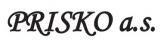
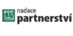
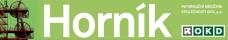
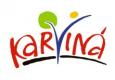

Společnost OKD, a.s., jako významný zaměstnavatel v Moravskoslezském kraji, ctí zodpovědnost především za rozvoj regionu a zlepšování životních podmínek jeho obyvatel. Podporuje kulturní události, sportovní aktivity místních klubů a investuje do kulturních památek. Sponzoringem a dárcovstvím také pomáhá mladým lidem nebo handicapovaným dětem. Stranou nestojí ani investice do industriálních památek nebo podíl na rekultivaci krajiny postižené důlní činností.
Vytvoření Nadace OKD, je logickým krokem v dlouhodobé politice firmy finančně podporovat rozvoj Moravskoslezského regionu a zlepšování života v něm.
V roce 2008 se společnost stala největším dárcem mezi soukromými firmami v České republice. Za dobu působení přijala Nadace OKD od společnosti OKD, a.s. dary ve výši téměř 428 milionů korun. Společnost OKD, a.s. se může pyšnit druhým místem v soutěži Top Filantrop 2010. V roce 2009 navíc v této soutěži získala vedle druhého místa i zvláštní cenu v kategorii Skokan roku.ZŘIZOVATEL
DÁRCI
|  | |
PARTNEŘI
V jednotě je síla. Nadace OKD proto spolupracuje při podpoře neziskového sektoru s dalšími organizacemi. Děkujeme tímto všem partnerům za podporu!
 | ||||
|  |  |